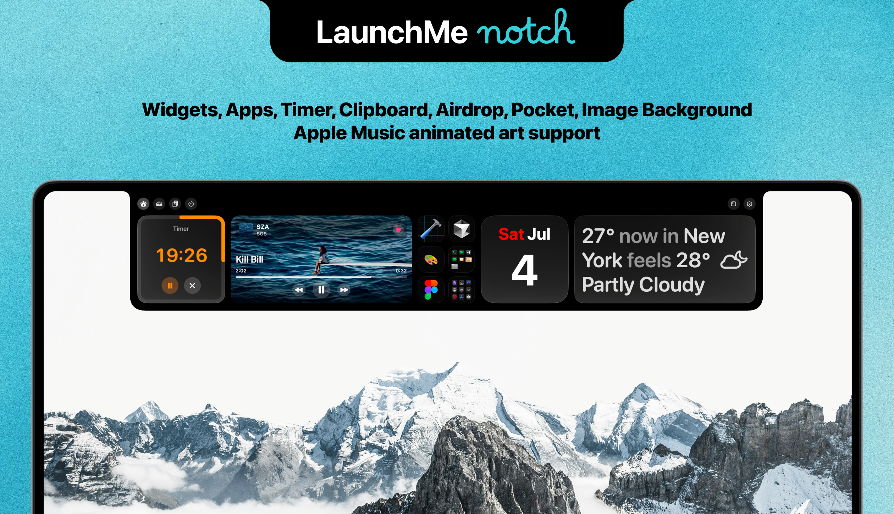
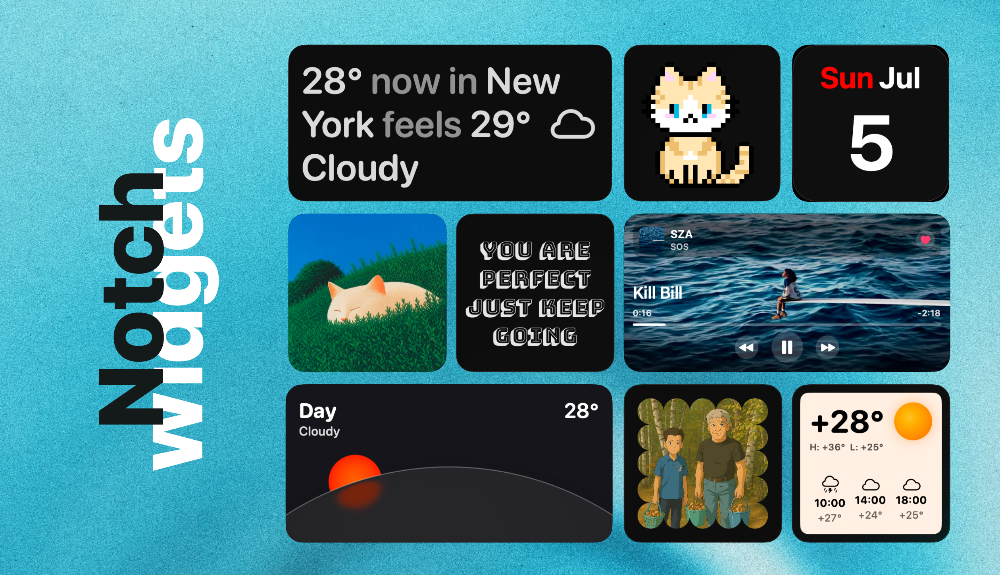
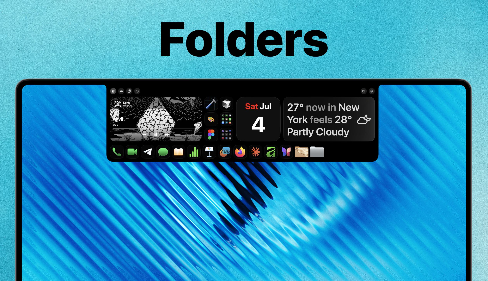
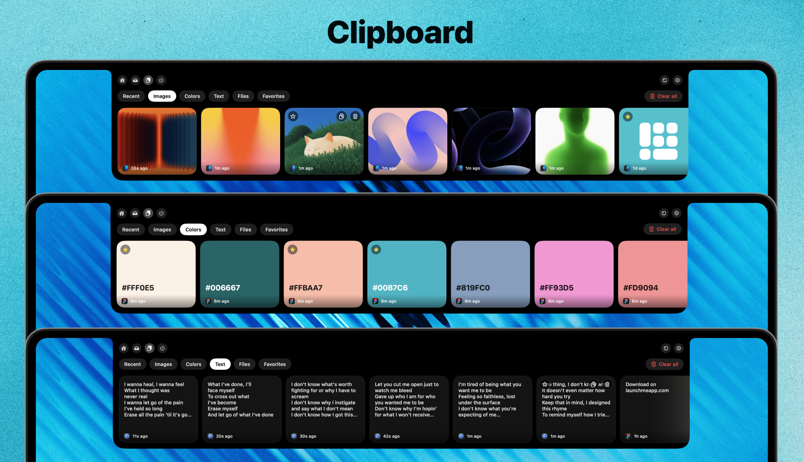
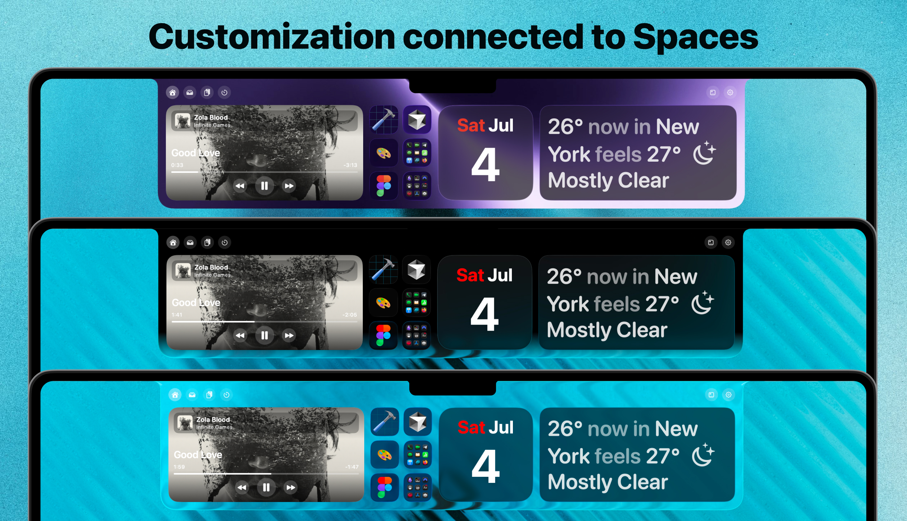
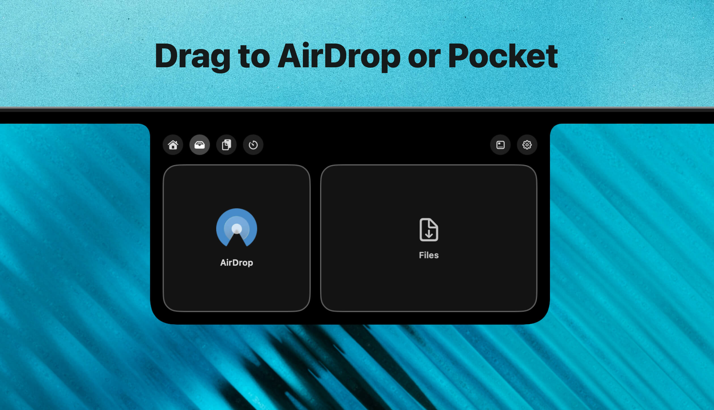
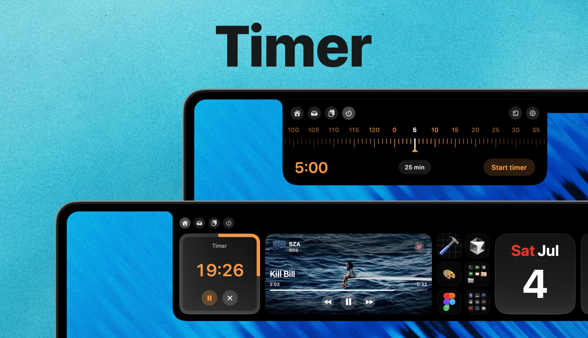
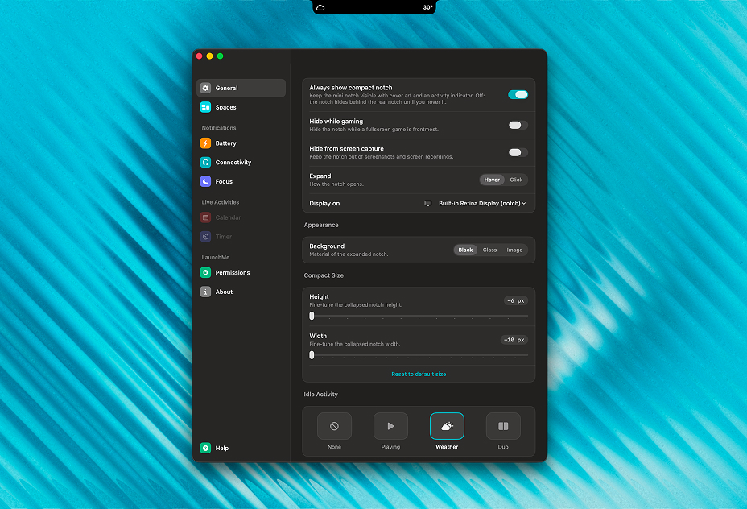

LaunchMe update.
Hello Notch
What update 2.0 brings to LaunchMe users
LaunchMe is incredible on its own. But when you use it together with Notch, they work wonders. Thanks to the seamlessly integrated Widgets and Spaces features, which let you customize your Notch with different backgrounds and layouts, and automatically switch between them along with your Spaces. Add apps, folders, or even workflow icons! It works just like magic!

Notch Widgets
Notch is seamlessly integrated with LaunchMe, which means you can use all widgets inside, such as Music, Weather, Calendar, GIF, Photo, Affirmation, and Animations. All widgets are fully customizable, like main LaunchMe widgets.
Also Notch has its own Timer widget that automatically appears when you set your timer and disappears when it finishes.
Most importantly, you can use one Notch layout for all your LaunchMe Spaces or create different ones for each Space, with different widgets, apps, folders, and other customization. Once you switch between Spaces, your Notch follows too.
One more thing: Music Widget in Full Cover style now supports Apple Music animated art as background. So if a song has a video cover, it will be automatically played in your widget right inside Notch!

Folders
One more widget is your Apps widget that allows you to add Apps, Folders, and Workflows right from your main LaunchMe grid by right-clicking on an app and choosing Add to Notch in the context menu.
If you click on folders, it will slide down with all your apps from that folder, which you can scroll through and find the app you want to launch.
Notch supports app icon customization and Clear Colored icons, so once you add new icon art to any app, it will be shown in Notch too. Sounds like magic. Works like magic!
You can set different apps in Notch for each Space or just use one for all. It's up to you.

Clipboard
Clipboard feature already exists in LaunchMe search field, but this is a whole new experience. Notch Clipboard shows you preview cards and categories of copied items such as Recent, Images, Colors, Text, Files, Favorites.
You can drag and drop images from Notch to any application or click on a preview card to copy.

Customization
LaunchMe is known for deep visual customization and Notch follows this direction. You can change background between Black, Clear Liquid Glass, Black + Liquid Glass, Custom Image.
All your customization of Notch background will be saved for the current Space and will be changed automatically if you switch between Spaces.

AirDrop and Pocket
If you drag any file to Notch, it automatically opens the section with AirDrop. Drop a file inside and it opens AirDrop. Drop a file to the second area and it is added to Notch Pocket, where it waits until you delete it. You can place different files in Pocket to take them later to another app or folder.

Timer
You can set a timer in Notch and it will appear as Timer Widget automatically. You will also see the time counter in compact Notch when it is closed, and when the timer finishes you will see a smooth animation and haptic feedback on the trackpad notifying you about time.

Compact Notch
Compact Notch can show you current weather, Now Playing music cover and time, notifications of your Mac battery, connected AirPods or other Bluetooth devices, and Focus mode. You can disable compact Notch in settings, hide it while gaming, hide from screen capture.
Settings
You can customize Notch in settings as you prefer. For example, you can open Notch by hovering the area or by click. And you can adjust height and width of compact Notch to match the exact size of your Mac Notch.
If you use external displays, you can manage where Notch will be located. Right now Notch visually works the same way for displays without a physical notch, but in future updates we will adapt it.
You will find much more settings while exploring LaunchMe Notch to setup the perfect workflow for yourself.

Other fixes and improvements
- Music Widget supports Apple Music animated art in Full Cover Style for all sizes.
- Gesture with Finger Spread now closes LaunchMe
- Fixed Music Widget bug that used too much CPU and Power.
- Fixed hidden apps unhide after restart Mac or in other cases
- Fixed gesture might not working after Sleep until you turn it Off/On
Why LaunchMe
LaunchMe is more than a Launchpad replacement on macOS 26 Tahoe and macOS 27 Golden Gate. With Notch in update 2.0, your launcher and MacBook notch work as one system: widgets that match your Spaces, apps and folders one click away, Clipboard with previews, AirDrop and Pocket for files, a Timer that lives in the notch, and compact Notch for weather, music, and battery at a glance. If you want a Mac app launcher that goes beyond the grid and uses every part of your workflow, LaunchMe 2.0 is built for that.